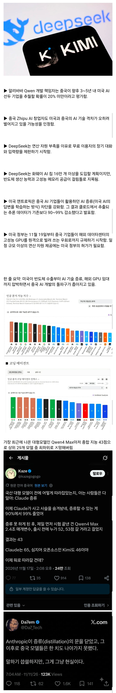

현대차보면 답나옴
"플레오스"
지구 자원 다 빨아먹는 두 국가의 자강두천 싸움에서 동방의 소국에 무슨 기대감을 가지고 있는 거에요
무임승차라도 해야할 지경임
중국은 대학생들이 로봇을 만들어서 마라톤을 개최하고, 무인 자동차의 개발에 열을 올리고 있고
미국은 첨단AI를 끊임 없이 발전시키고, 하늘을 나는 자동차를 만들고 있으며
한국은 자동차의 계기판을 옵션으로 돈주고 팔고있다.
인공지능에서 현대차가 왜나오는지 모르겟네
현대차가 인공지능투자 꾸준히 한애들도아니고
하긴했지만....ㅠ
그래도 미국중국 빼면 우리가 탑급이야
ㅋㅋ별 의미 없긴하지만
논문은 잘 나옴
미중 근처는 절대 못가고 제외한 나머지 국가들 사이에서는 이 체급으로는 시발 이게 된다고? 수준임
한국에도 당당히 내세울만한 AI 유니콘 기업이 존재한다.
이름은 뤼튼 사업모델은 19금 캐릭터챗이다.
선진국의 말석, 인공지능 강대국 중 최하위
증류쉐이
중국이 주변국들과 원만하게 지맸으면 한국 대만 일본에서 반도체 수급하면서 치고 올라갔을 가능성이 있음
뭐 공산당 지지율 관리하느라 주변국 공격했으니 고립되는것도 자업자득이다 이거야
asml을 미국이 꽉 잡고 있어서 한국이든 일본이든 미국 통수 못치지 않나..?
미국과 싸우지 말라고 하던 유지를 지키는 것 말고는 방법이 없지..
언제가 될지 몰라도 철저하게 을로 위장해서 미국에 넙죽 엎드리면서 나중에 기회 생겼을 때 뒤집었어야 했는데 덩치 좀 커졌다고 이빨 들어냈다가 이빨 다 털린거..
그게 또 외교적으로 쎄쎄쎄 하고 있었으면 미국도 우방이니 눈치본다고 비싸게 팔다남은거 주는건 가능~ 했을건데, 지금 상황이 미국 빠지면 625 어게인이니깐 어짜치 너 나 없으면 나라 망하잖아~ 하면서 미국이 마음대로 할 수 있는거.
러시아랑 우리나라랑 관계만 봐도 서로 윈윈하는 관계였으면 제3자인 미국이 갠세이 넣기 애매함. 둘다 발끈할꺼라.
이만하면 됐다 싶었는데, AI가 있었네.
명나라 망한 이후로는 걍 짱.개인거지 뭐
우린 저거 반이라도 되나? 어케 되가고 잇으?
우리가 굳이 자동차의 발명자가 되지 않아도
짜배이는 한계가 있지.
로컬 모델도 영향받겠다
증류주 맛있지 ㅇㅇ 못먹게하면 화남
빡세보이긴 함..
그래도 중국 AI 기업들은 가성비모델 시장을 먹을 것임.
다행이다...
재료없이 이만큼 따라온게 신기함
아무튼 중국 ai이 미국 ai를 따라잡네 어찌고 ㅋㅋㅋ 중국 전문가들은 계속 곡소리 내고 있는데 그리고 지금의 성과도 인민 갈아서 국가보조금으로 굴리니까 가성비 어찌고가 되는 거지. 그걸 과연 무한하게 할 수 있을까? 그리고 미국 ai는 성능 수직 상승 중이라 나중엔 ai 지능이 넘사벽이라 토큰 사용량도 줄텐데 가성비 승산이 있을까? 벌써 중국 ai는 제한 들어갔지? 인민 갈아서 넣는 보조금이 절대로 무한한 것이 아님.
그리고 중국은 순전히 증류빨이라니까 한국 커뮤 활동하는 일부 유저들이 아무튼 아니다 ㅋㅋ 중국 ai 전문가들은 증류 막혀서 답 없다고 하고 성과도 안 나오는데 한국에서 자칭 전문가라며 아니라는 애들은 차라리 우마오당 활동인게 나을 듯
증류벌레들 저걸 어떻게 막았지? 공방이 매섭네 ㅋㅋㅋ
구글생각해보면 구글이란 빅테크 하나가 경쟁자 모두를 살해하고나서야 끝났잖음.. Ai도 마찬가지지 승자가 모든걸 독식할테니 수단과 방법을 안가릴거. 승자가 프리미엄 Ai도 가성비 Ai도 다해먹을거임
증류 밝혀지고 난 다음부터 이건 상수였지
그냥 미국이 압도해서 긴장감도 없을듯 ㅋㅋ
자, 그럼 알아들었지? 반도체 주가야 올라라...
중국이 뒤지건 말건 알바 아닌데 우리나라는 시작도 못해봤다는게 큰 듯 이번에도 소프트웨어는 미국의 승리로 끝날꺼 같은데 문제는 이번에는 좀 많이 빡셀거임 지금 들어간 비용 전부다 청구서가 되서 돌아올 예정인데 역시 투자는 미국이다.
이번에도 하드웨어나 열심히 만들어야 되는데 중국애들 로봇 굴리는거 보니까 이것도 쉽지 않아보이던데
그전에 우주로 나가면 괜춘할듯
사실 화폐라는 것도 결국 허상인데 꿈팔이로 투자자 모아서 성공한 사례가 스엑이니 ㅋㅋ 유럽이나 아시아 고혈 빨아서 못할거 없지
긴빠이의 한계가 느껴지고, 미국이라는 나라는 진심 대단하다는 생각밖엔 안듦. 이빨빠진 호랑이 무기가 이빨만이 아니었던 거..
근데 증류를 어케 막는거야?
그냥 일반 사용과 패턴차이가 좀 나는건가?
꺙 미국 빼고 다 망한거 같음.
이거 확인하고 "쟤들 못쫓아온다, 기관차에 매달린 짐차였다" 확신하고 거품빼기 들어간거라는 음모론이 뭉게뭉게
어제 텐센트 HY4 떴는데 6솔 오푸스5랑 비슷하더라
젠슨황님 이 큰 그림을 그리신겁니까
지금 상황만 보면 젠슨황이 중국에 gpu 팔자고 하는건 틀렸고
컴퓨팅 자원 고립 시키는게 맞았네
GPU 문제 때문에 중국에선 CPU를 활용해서 AI 성능 높이는 논문 같은 것도 나오더라
그러면 CPU 수출 금지 때림 ㅋ 미국 행보보면 모름? 100%임. 중국이 무슨 반도체 자체 제작하고 CPU 만들어서 한다? 그럼 미국 AI는 이미 우주로 가있음. 그리고 중국이 공개한 CPU 방식 논문보고 미국은 CPU 방식도 같이 쓸 거.
요즘 AI 날이면 날마다 박살나고 있는데
누군가 조국의 미래를 묻거든 고개를 들어 뤼튼을 보게 하라
삼성의 반도체를 사가라
그라믄 안댄다
중국이 비실비실대면
미국 ai투자 약해지잖아
그러면 내 주식이 ㅈ박아요
우리는 어캐하고있음? 따라가고있긴함?